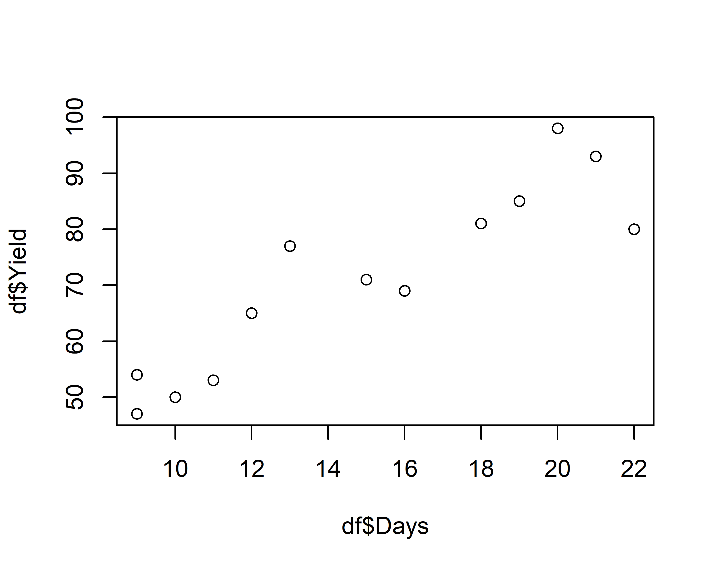
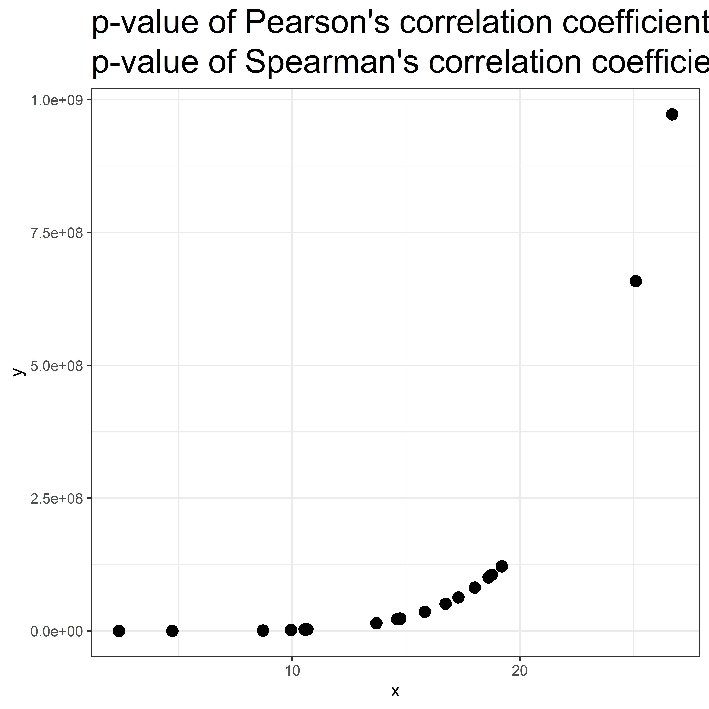

Variety Days Yield
Length:13 Min. : 9 Min. :47
Class :character 1st Qu.:11 1st Qu.:54
Mode :character Median :15 Median :71
Mean :15 Mean :71
3rd Qu.:19 3rd Qu.:81
Max. :22 Max. :98
Проверим, есть ли взаимосвязь между количеством дней до сбора урожая и урожайностью.
Посмотрим на данные
С помощью функции skim() из пакета skimr.
skim_res <- skimr::skim(df)knitr::kable(skim_res)
skim_type
skim_variable
n_missing
complete_rate
character.min
character.max
character.empty
character.n_unique
character.whitespace
numeric.mean
numeric.sd
numeric.p0
numeric.p25
numeric.p50
numeric.p75
numeric.p100
numeric.hist
character
Variety
0
1
4
16
0
13
0
NA
NA
NA
NA
NA
NA
NA
NA
numeric
Days
0
1
NA
NA
NA
NA
NA
15
4.672615
9
11
15
19
22
▇▃▃▃▆
numeric
Yield
0
1
NA
NA
NA
NA
NA
71
16.573071
47
54
71
81
98
▇▂▆▆▃
Это запись для презентации, обычно достаточно запустить:
# install.packages('skimr')library(skimr)skim(df)
График зависимости
plot(df$Days, df$Yield)

Ковариация
Самая простая мера связи между двумя количественными переменными — это ковариация. Если ковариация положительная, то чем больше одна переменная, тем больше другая переменная. При отрицательной ковариации наоборот: чем больше одна переменная, тем меньше другая.
Если оценить ковариацию переменной с самой собой, какая будет формула?
Ковариация
Ковариация переменной с самой собой - это дисперсия.
Давайте посчитаем ковариацию: функция cov().
cov(df[,2:3])
Days Yield
Days 21.83333 70.2500
Yield 70.25000 274.6667
По главной диагонали ковариация переменной с самой собой - дисперсия.
Для подсчета ковариации для двух величин:
cov(df$Days, df$Yield)
[1] 70.25
Можем ли мы сделать вывод, это относительно большая ковариация между переменными или нет?
Коэффициент корреляции
Проблема ковариации в том, что она привязана к исходной шкале и измеряется в пределах \([-\infty; \infty]\). Неплохо было бы иметь возможность нормировать. Для этого используется коэффициент корреляции.
В качестве тестовой статистики используется t-статистика.
Для расчета p-value используется t-распределение с \(n_1+n_2-2\) степенями свободы, где n1, n2 – размер выборки 1 и 2.
Мы это вручную считать не будем, воспользуемся встроенной функцией cor.test().
Расчет с помощью функции cor.test()
cor.test(df$Days, df$Yield)
Pearson's product-moment correlation
data: df$Days and df$Yield
t = 7.1502, df = 11, p-value = 1.868e-05
alternative hypothesis: true correlation is not equal to 0
95 percent confidence interval:
0.7121066 0.9722055
sample estimates:
cor
0.9071588
По умолчанию рассчитывается коэффициент корреляции Пирсона: оценивает связь двух нормально распределенных величин. Выявляет только линейную составляющую взаимосвязи.
Часто используется коэффициент корреляции Спирмена (Spearman), если в данных есть выбросы. Математика метода точно такая же как у коэффициента Пирсона, только вместо оригинальных значений используются ранги.
В целом, непараметрические критерии не зависят от формы распределения и могут оценивать связь для любых монотонных зависимостей.
cor.test(df$Days, df$Yield, method ='spearman')
Spearman's rank correlation rho
data: df$Days and df$Yield
S = 38.553, p-value = 3.757e-05
alternative hypothesis: true rho is not equal to 0
sample estimates:
rho
0.8940861
Наличие значимого коэффициента корреляции ничего не говорит о причинно-следственной связи между переменными!
Kendall's rank correlation tau
data: df$Days and df$Yield
z = 3.484, p-value = 0.000494
alternative hypothesis: true tau is not equal to 0
sample estimates:
tau
0.7354992
Сравнение различных коэффициентов корреляции
Пирсона
Спирмена
Кендалла
Выявляет линейную зависимость
Выявляет любую монотонную зависимость
Выявляет любую монотонную зависимость
Количественная или интервальная шкала
шкала >= ранговая (то есть ранговая, интервальная, количественная)
шкала >= ранговая
Неустойчивость к выбросам
Устойчивость к выбросам
Устойчивость к выбросам
Пример ситуации, когда коэффициент Спирмена более применим:

Проведя корреляционный анализ, мы лишь ответили на вопрос “Существует ли статистически значимая связь между величинами?”
Сможем ли мы, используя это знание, предсказать значения одной величины, исходя из знаний другой?
\[ y = b_0 + b_1x \]\[ y = b_0 + b_1x_1 + b_2x_2 \]
\[ y = b_0 + b_1x_1^2 + b_2x_2^3 \]
Нелинейные
\[ y = b_0 + b_1^x \]\[ y = b_0^{b_1x_1+b_2x_2} \]
Простые и множественные
Линейная регрессия: формула
Линейная регрессия позволяет предсказать значение одной переменной на основании значений другой. Обе переменные должны быть количественными.
Формула для простой линейной регрессии - по сути это формула прямой из алгебры + остатки:
\[ Y = ax + b + \epsilon \]
\(Y\) - зависимая переменная, что пытаемся предсказать, \(\epsilon\) - это ошибки или остатки модели (residuals) - то есть то, что наша модель не смогла предсказать.
Для более сложных моделей нотация немного меняется: